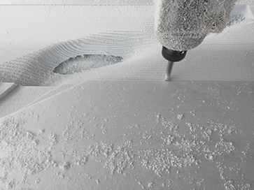
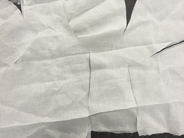
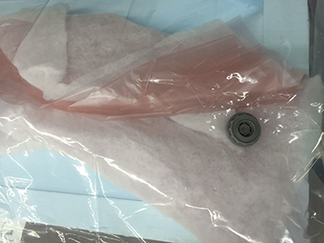
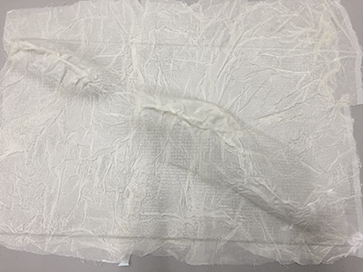
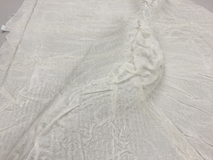
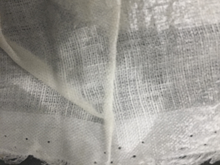

Week 9
To-do:
Read the material safety data sheet (MSDS) and technical data sheet (TDS) for the resins that you're using
Design and fabricate a 3D mold (~ft2) and produce a fiber composite part in it
Composites
Inspired by the work of Amir Karimpour, I decided to experiement with Maya to create an interesting form for my composite.
Overall, this week was lacking in failure. Everything came together nicely - from the machining on a Shopbot, which was a breeze, down to the finished fibers. Since the purpose of the work was mostly aesthetic, I opted for linen in favor of burlap, which I dry fitted by making a few incisions lining the crevices beforehand. The form came out beautifully with a resolution so fine that even the toolpath was apparent.
- 
- 
- 
- 
- 
- 